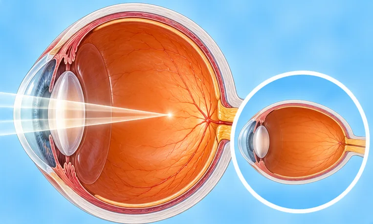
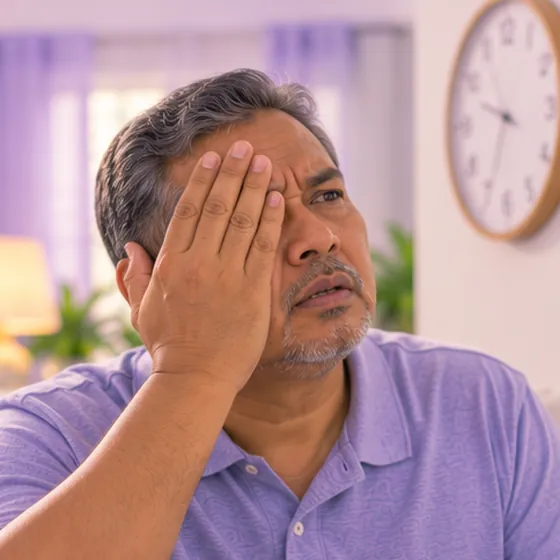

Double vision (diplopia)
Seeing two images of one thing, sometimes in one eye, sometimes in both
What it is
A single object looks like two. It can come from the eye itself or from the nerves and muscles that move the eyes, so it should always be checked by a doctor.
- Eyes and eye muscles
- Can affect any age
- Two images of one thing
- Which doctor
- Eye doctor (ophthalmologist); sometimes a brain and nerve doctor
- Common in
- Adults, especially with diabetes or high blood pressure; also children
- Contagious
- No
- Course
- Depends on the cause; some causes settle, others need a doctor's plan
Common signs

Double or changed visionDiplopia 
Tired, strained eyesEye strain
More signs
- The double image goes away when one eye is covered
- Trouble reading, climbing stairs or judging distance
Why it happens

High blood sugar or blood pressureMetabolic risk factors
Other causes
- Weak or unbalanced eye muscles
- Problems of the eye itself, such as the lens or cornea
- Head injury, or sometimes stroke or other conditions of the brain
See a doctor first if
- Sudden double vision with face drooping, arm weakness or speech trouble: call 999
- Sudden double vision with a severe headache: go to hospital now
- Double vision after a head injury
- A drooping eyelid, a painful eye or a bulging eye together with double vision
- Double vision that lasts more than a day or keeps coming back
If any apply, please see a doctor before a session.
This page is general information. Please keep taking your normal medicine and keep seeing your doctor.
Keep your normal care
Keep taking your normal medicine and keep seeing your doctor. Our session is a gentle support and does not replace medical care.
Looking after yourself

Check your blood pressure at homeHome BP monitoring
More ways to look after yourself
- See a doctor to find the cause; do not just wait
- Avoid driving, climbing and using machines while you see double
- Rest your eyes and use good lighting
Tell your therapist
- Diabetes or less feeling in the skin
- High blood pressure
- Dizzy when turning the head
- Recent neck injury or surgery
Your therapist will go through this with you before starting.
Related conditions
- Cataract
- Viral conjunctivitis (red eye)
- Eye floaters (vitreous opacity)
- Ingrown eyelashes (trichiasis)
- Eye floaters
- Dry eyes
- Severe short-sightedness (high myopia)
- High eye pressure (ocular hypertension)
- Alzheimer's disease
- Seborrhoeic dermatitis (dandruff-type rash)
- Peeling lips (exfoliative cheilitis)
- Tonsil keratosis
References: General information based on public health sources such as Mayo Clinic, NHS, Cleveland Clinic and NCBI StatPearls.
Page updated: 2026-10-31